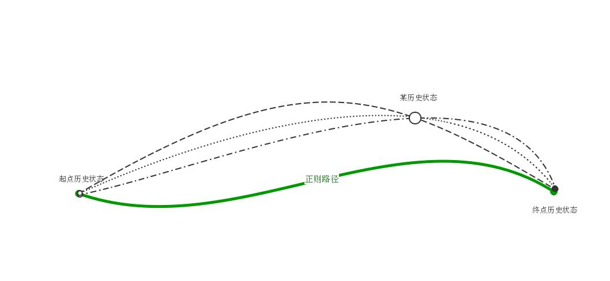
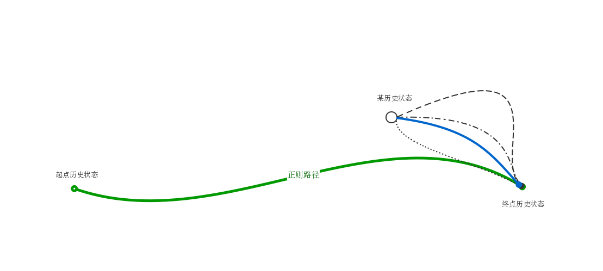

历史 - 点子集
毫无疑问，人类对历史的记录非常不完善，除了错误的记载，还有数不尽的遗漏。然而这也为科幻创作带来了很多机会，因为历史上有很多谜团或者说可以被利用的“漏洞”。这些漏洞，既可以直接利用，诠释现有的历史记载，也可以创作架空历史故事。
历史科学
路径积分历史学
剧透预警
对于《基地》系列的轻微剧透
在我们列举具体的架空历史的方案之前，先看一下历史学本身。
而此时此刻，我所想到的是，倘若我们物理学中变分原理、甚至路径积分的想法应用到历史中呢？
物理学已经与很多学科产生了交叉，除了自然科学，物理学的方法也已经被用到了其他的领域，例如经济学、社会学等，而路径积分的方法，早已被经济学家所使用。那么我们不禁想问，社会学呢？或者历史学呢？
心理史学
在《基地》系列中，Seldon 的心理史学，有一部分非常有可能使用路径积分的方法来实现。
创建第二银河帝国，Seldon 所要考虑的是未来可能的路径，以及一个自己想要的未来状态（某种状态的第二帝国，为避免剧透，暂不透露细节）。也就是说，Seldon 知道初始状态以及结束的状态。
既然《基地》系列中， Seldon （或者第二基地）知道历史的初末状态（初始：帝国当前状况；末态：他所设计的第二帝国），那么仿照量子场论或者统计物理或者经济物理里面的路径积分方法，如果知道作用量，就可以得知不同可能的历史路径的相对概率。然后通过路径积分方法，就可以给出一条 正则路径 。
《基地》故事中，第二基地可以说出某些事情发生的概率，以及采取某些措施之后有多大的概率回到某个状态。
如前所述，我们知道不同路径的概率，然后我们对所有的经过这个事件的所有的路径求和（积分），我们就可以得到这个事件发生的概率（其实是个相对概率）。

然后我们以此状态（“某历史状态”）为起点，修改作用量（添加额外的影响，也就是自己想要采取的措施），计算当前这个已经偏离正则路径在点，回到正则路径上的所有的可能点的可能路径（这是一条从偏离点回到原来设定的正则路径的新的正则路径）。然后对所有的这些求和（或积分），就可以给出采取了这个措施之后，回到原始正则路径的相对概率。
然而，不必拘泥于小说故事，我们不必回到原始的正则路径。我们需要做的，只是达到我们的目的——第二银河帝国，所以我们只需要计算采取某种某种措施之后，新的正则路径是什么。

历史的终点是什么
可是，我们如何知道历史到达上面所有提到的终点状态的绝对概率呢？倘若我们有一个历史的必经之点，那么我们就可以以此点为参照，计算出经过我们想要的点的概率。然而这是非常困难的。
架空历史
架空历史故事的一个手法是从人类历史上某个事件开始给出一条完全不同的路径，一个典范是《差分机》，其假定了十九世纪的差分机并没有失败1，而是快速的发展起来，不仅仅科技的路径会改变，政治经济环境等等人类的整个历史就会变得完全不同。
若模仿《差分机》模式，我们需要找出历史上可能的分叉点，看到历史的一条迥然不同的路径。
新的考古发现
我们可以安排很多新的历史和考古发现，通过这些“新的发现”来提供重新解释历史或者发展未来。
解码古时候的声音记录
这只是一个插入新的考古发现的例子。
人类能够留下图像记录，因为相比之下，图像更容易重现出来。而声音的重现却困难的多。倘若我们想要在背景中插入什么重要的线索。
例如，可以非常久远的雕刻实际上是声音文件，可以解码，播放出来。这样我们可以解密那个时代的口语。甚至如果剧情需要，可以通过那个人指出一个天大的秘密，这也是很多故事热衷的情节。
至于如何解码声音记录，如果没有校准文件，只能通过运气或者暴力破解。实际上我们可以讲雕刻的记录图像化，然后通过计算机暴力破解。
再举一个例子。这次我们可以拿 Leonardo da Vinci 开刀。
这位天才实际上发明了记录声音的方法，虽然他没能还原记录的声音，但是他确实将许多重要的声音记录下来了。然后我们将来发现了这些声音记录并且解码出来。
另一个思路是我们可以假设他发明了记录声音的方法，并且能够解码，用于一些秘密通信只用，这也是为什么我们看不到历史中记载他的发明。这样我们可以重新解释文艺复兴的历史，写出一段精彩的故事。